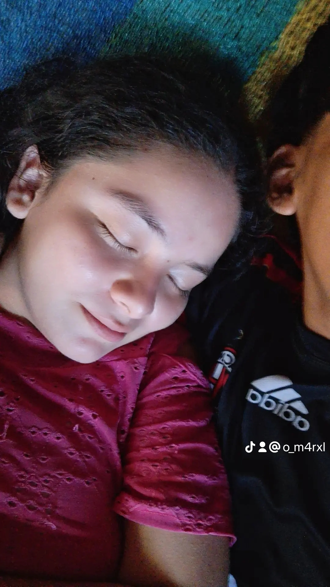
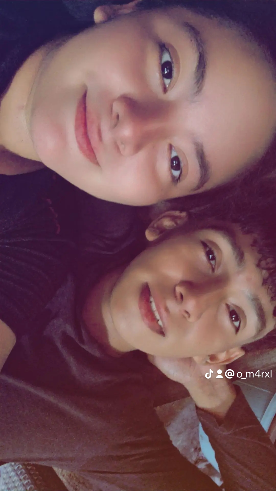
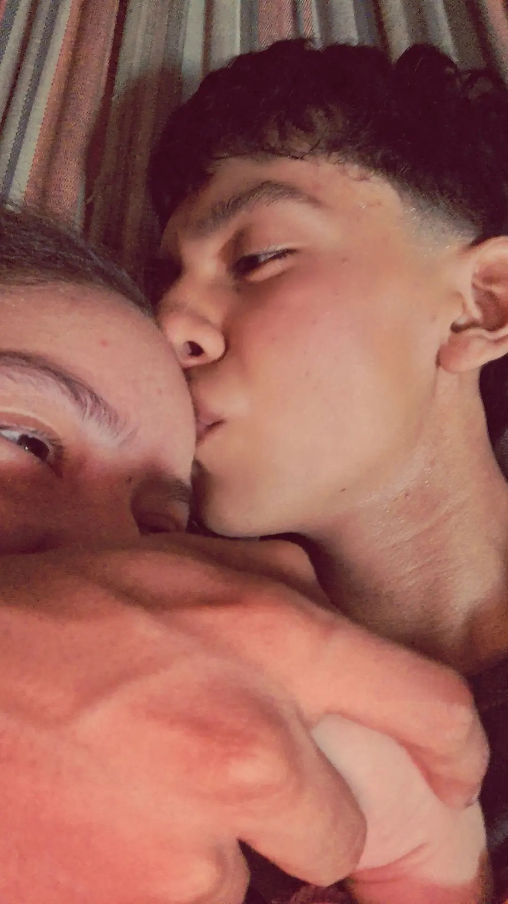

⏰ Tiempo a tu lado, mi vida:
0
0
0
0
✨ Calculando tiempo de amor... ✨
🌸 Frase del día para mi niña:
Cargando frase del día...

✨ Calculando tiempo de amor... ✨
Cargando frase del día...
Hola mi princesa, quería hacerte esto para recordarte lo mucho que te amo. Desde el primer día te convertiste en lo más bonito de mi vida. Eres mi reina, mi gordita hermosa y la niña que alegra cada uno de mis días. Gracias por estar a mi lado, por cada sonrisa y por aguantarme siempre. No importa lo que pase, mi amor por ti solo crece más y más. Te amo con todo mi corazón, jamás lo olvides. ❤️

Mi lugar favorito

Un día especial

Te amo demasiado
Toca el botón para descubrir un motivo diferente por el cual te adoro:
Un generador con cientos de mensajes tiernos para cuando me extrañes o necesites un apapacho:
Una ruleta llena de retos y preguntas divertidas para jugar juntos:
Escribe aquí lo que desees, un antojo o un mensaje. ¡Al enviarlo me llegará directo a mi correo!